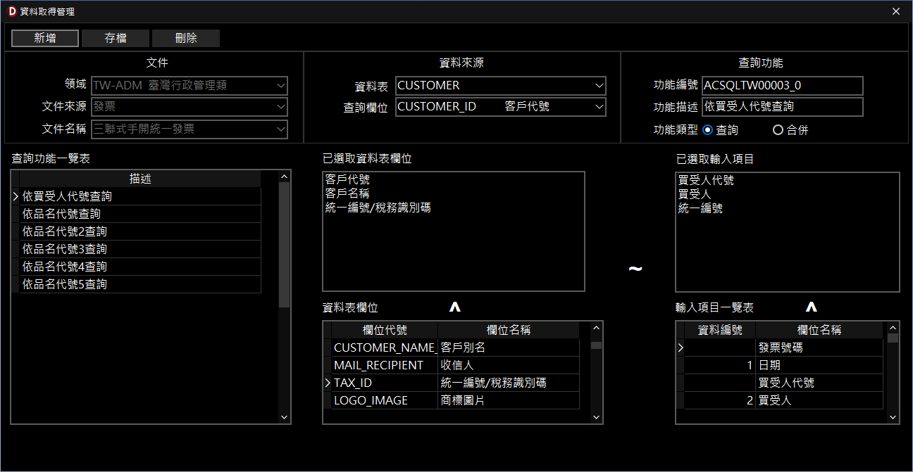

資料取得管理
本功能用於設定 InfoRec 軟體（以下簡稱 InfoRec）的資料帶入規則。透過配置「查詢功能」，您可以將外部資料表（如客戶資料庫）的特定欄位，自動對應並填入至當前表單的輸入項目中，大幅提升建檔效率並確保資料正確性。
一、 視窗功能概述
-
基本操作列與文件資訊（上方區域）：
- 包含「新增」、「存檔」、「刪除」等按鈕，用於維護查詢與對應規則。
- 顯示目前設定所屬的領域、文件來源與文件名稱。
-
資料來源與查詢功能設定（中上區域）：
- 「資料來源」：可選擇外部的「資料表」（如 CUSTOMER）以及作為搜尋依據的「查詢欄位」。
- 「查詢功能」：系統會自動編列「功能編號」，您需輸入對應的「功能描述」，並選擇功能類型（「查詢」或「合併」）。
-
查詢功能一覽表（左側區域）：
- 列出目前該文件已建立的所有查詢對應規則（如：依買受人代號查詢）。點擊列表項目即可載入其詳細設定內容。
-
欄位對應設計區域（中下與右側區域）：
- 「資料表欄位」：左下角列出來源資料表的所有可用實體欄位。可透過滑鼠雙擊或點選上方
^ 按鈕加入至「已選取資料表欄位」。
- 「輸入項目一覽表」：右下角列出表單上可供寫入的欄位項目。同樣可加入至「已選取輸入項目」。
- 「關聯對應」：中央的
~ 符號表示左右兩側列表的對應關係。系統將依照排列順序，將左側選取的資料表欄位值，帶入至右側對應的輸入項目中。
二、 如何建立一個查詢規則
-
新增規則與設定來源：
- 點擊左上角「新增」按鈕清空現有畫面與設定。
- 在「資料來源」區塊，下拉選擇目標「資料表」，並指定一項「查詢欄位」作為搜尋時的鍵值依據。
-
填寫功能描述：
- 在右側「查詢功能」區塊中，於「功能描述」欄位輸入此查詢的用途（例如：依買受人代號查詢），並確認功能類型預設為「查詢」。
-
設定欄位對應關係：
- 從左下角「資料表欄位」清單中，滑鼠雙擊想要自動帶出的外部欄位，將其加入到上方的「已選取資料表欄位」列表。
- 接著從右下角「輸入項目一覽表」中，滑鼠雙擊欲接收該資料的表單輸入項目，加入到「已選取輸入項目」列表。
- 注意事項：在一般查詢模式下，請確保左側與右側已選取列表的欄位「數量一致」且「順序對應」。您可以透過滑鼠拖曳來調整上方清單的對應順序。
-
儲存設定：
- 確認來源欄位與目的欄位皆已配置且對應無誤後，點擊左上角「存檔」按鈕，系統會進行驗證並將此查詢規則寫入儲存。

資料取得管理視窗